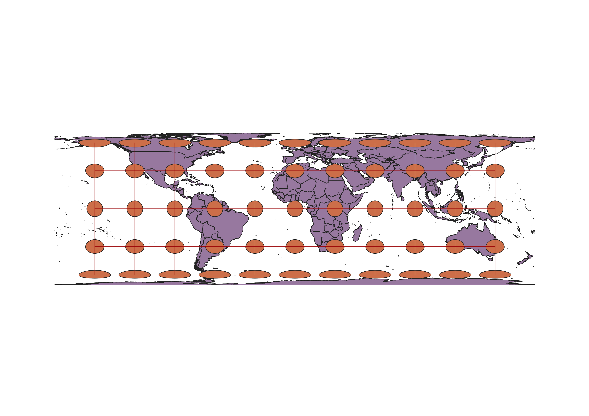

World Projections
To display different map projections using QGIS, you must first install the indicatrix mapper plugin. You can install this by going to plugins,
manage and install plugins, and searching for "indicatrix" in the all plugins section. Once you have installed indicatrix mapper you can put down a
base layer such as the 1:10m Cultural Map from naturalearth.com. To apply the indicatrix plugin to the map you click the globe icon in the top left of QGIS. You can then change the projetion
by clicking in the very bottom right and searching for your desired projection from the options. Indicatrix will automatically adjust the graticules and caps based on which projection you choose.
WGS84 Projection
- Shapes and distances are distorted closer to the poles
- Widely used for GPS technology, well suited for navigation and surveying
- Not well suited for large scale maps, distorts distances and angles

Aitoff Projection
- Preserves areas and the size of regions
- The most distortion of shapen appears at the poles
- Does a good job of the balancing the distortion of shapes, distances, and areas.

Pseudo Mercator Projection 3857
- Does not show true size or distance
- Retains accurate shape of continents
- Enlarges land closer to the poles

Winkel 53018 Projection
- Low distortion in populated regions
- Equal area projection
- Enlarges land closer to the poles

World Cylindrical Equal Area Projection 54034
- The poles are extremely distorted
- Is an equal area projection
- Seems to more accurately display relative size of land masses

World Equidistant Conic Projection 54027
- Is not an equal area projection
- Distances are preserved along the standard parallels
- Extreme distortion at South Pole

North Pole Azimuthal Equidistant 102016
- Equal area projection
- Enlarges shapes close to the south pole while preserving shape at the north pole
- Emphasizes the relative sizes of regions of the world

World Bonne Projection 54024
- Areas and the relative size of regions are preserved
- Shapes and sitances get more distorted as you move south
- Perserves shape at prime meridian and distorts as you move east or west

Craster Parabolic Sphere Projection 53046
- Equal area projection
- Preserves shape and distance at the equator
- Distorts the poles by stretching vertically

Data used for this project
Download Natrual Earth 1:10m Cultural Vector